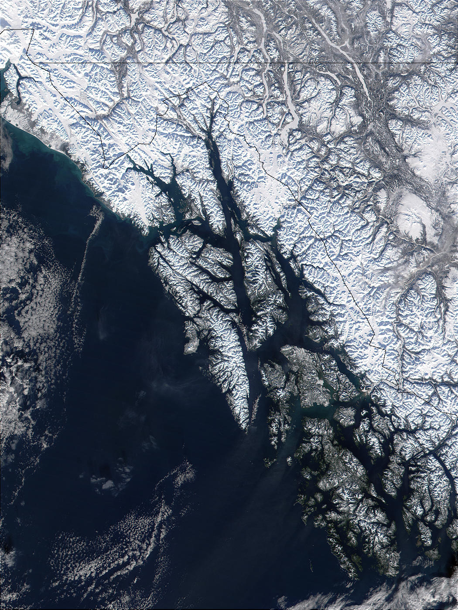

Why Southeast Alaska
Southeast Alaska is home to the Tongass National Forest, the world's largest intact temperate rainforest, and one of the world's great remaining continuous temperate forest ecosystems. But the region's significance extends beyond its forests.
Southeast Alaska is an extensive island archipelago where ocean, tidal environments, old-growth forests, alpine terrain, rivers, wetlands, and glacial landscapes exist in unusually close proximity. These interconnected ecosystems continuously influence one another: marine nutrients enter terrestrial food webs, forests regulate freshwater systems, rivers connect mountain landscapes to the sea, and coastal and marine processes influence the development of life throughout the archipelago.
This intimate relationship between marine, tidal, freshwater, forest, and alpine ecosystems makes Southeast Alaska an exceptional natural laboratory for understanding how interconnected ecosystems develop, function, and change over time.

Satellite imagery: NASA/MODIS